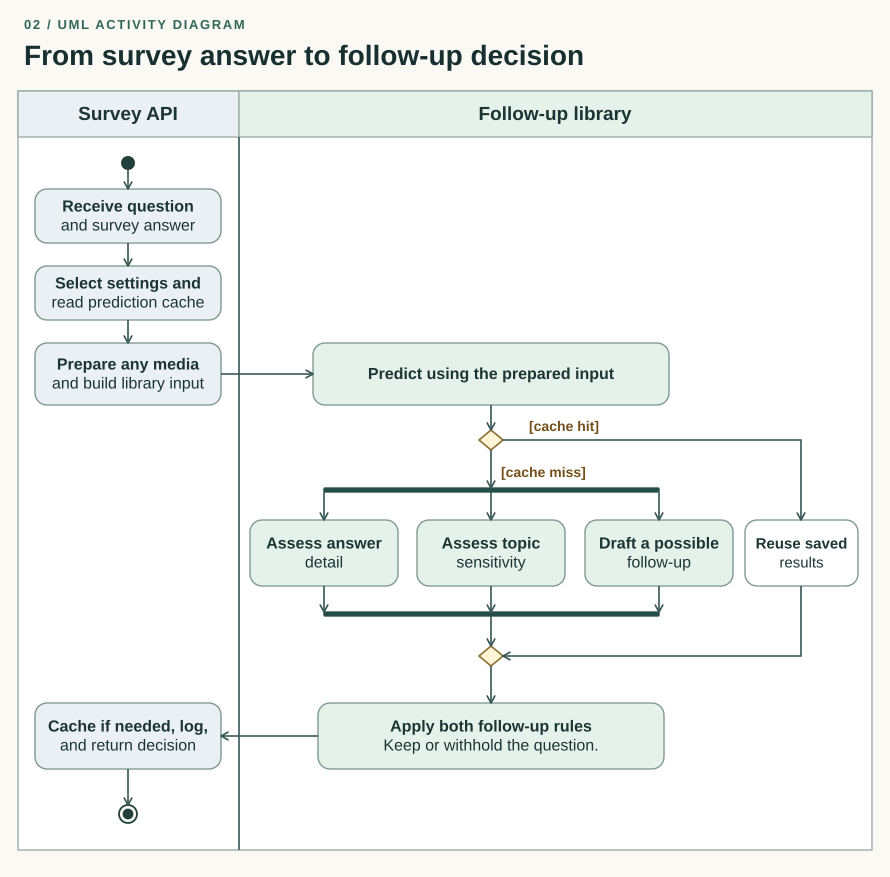

From API to library
The survey API receives the original question and the respondent’s answer. It checks whether the request can use this service, looks up a saved prediction, and gathers the available descriptions or transcripts if media was supplied. It then passes the prepared input to the follow-up library.


This UML activity diagram traces eligible requests. An unsupported survey language or region, a request assigned to the older version, or a reported media error can return from the API before the library is called.
Drafting a question and deciding to ask it are separate steps
Without a saved prediction, the library starts three tasks together: assess whether the answer gives enough detail, assess how sensitive the topic is, and draft a possible follow-up. It waits for all three. Drafting the question in parallel means the generator does not need to wait for the two assessments.
A question is selected only when both assessments permit it under the request’s settings. If either blocks it, the library withholds the text. With a saved prediction, it skips those three tasks and applies the same rule to the saved assessments and candidate question.
What the survey receives
The API saves a new prediction when the library marks it for reuse, records the result, and returns three fields: whether to ask, the question text if selected, and an error message if something went wrong. One request can return at most one follow-up question.